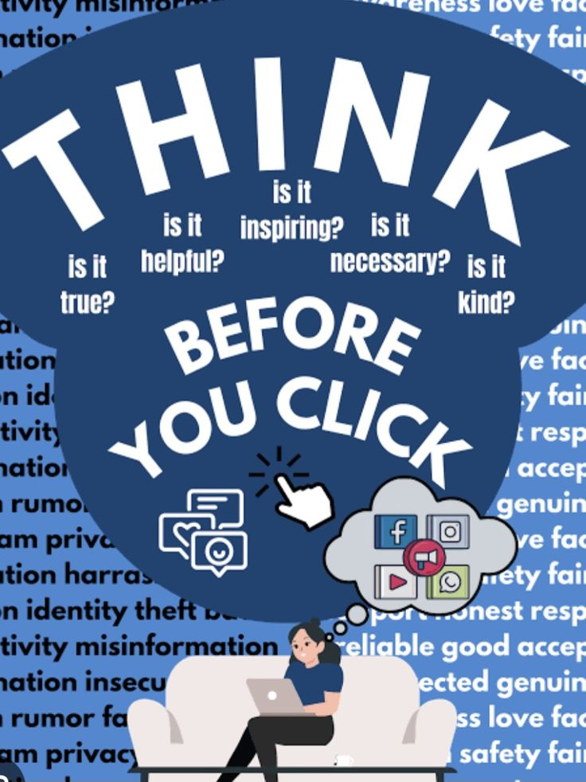

Media literacy is the ability to access, analyze, evaluate, create, and interact with media content in a responsible and critical way.
In the digital age, media literacy helps individuals understand how information is created, how it is shared through technology, and how it can influence thoughts, beliefs, and behavior. Modern technology is the primary channel through which media is produced and consumed, making this literacy a vital guide for using technology wisely.
Skill vs. Responsibility
Media literacy can be understood as both a skill and a responsibility. As a skill, it helps individuals critically evaluate digital content instead of accepting everything at face value. As a responsibility, it encourages ethical participation in the digital world, including respectful communication and awareness of digital footprints.

Judgment & Human Capability
Just as technology extends human capability, media literacy strengthens human judgment. It helps people recognize fake news, avoid online scams, protect personal data, and engage respectfully in digital communities. Without it, users may fall victim to manipulation, cyberbullying, or false information.
Key Importance Examples
1. Social Media Awareness
Understanding how algorithms on platforms like Instagram shape what users see helps people avoid echo chambers and biased information.
2. Online Safety and Privacy
Recognizing phishing emails or fake websites protects users from scams and identity theft.
3. Evaluating Online News
Checking multiple reliable sources before believing trending stories reduces the spread of misinformation.
4. Digital Citizenship
Engaging respectfully in online discussions and understanding the long-term impact of digital footprints.
5. Academic and Research Skills
Students using search engines and online databases learn to distinguish credible sources from unreliable ones.